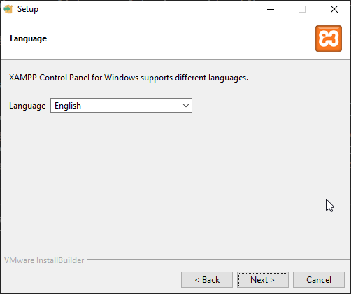

Tutorial: Como instalar XAMPP
Aprende a instalar el stack de soluciones XAMPP en este sencillo tutorial
Hoy en día en donde cada vez aparecen más y más tecnológias tener un control de dependencias eficiente
puede llegar a ser pesado por lo que para solucionar este problema se inventaron los Stack de soluciones.
Paquetes softwares con todos los servicios necesarios para cualquier tipo de proyecto, en este tutorial
aprenderemos a instalar el stack de soluciones XAMPP que nos permitira tener un servidor
web listo para funcionar en unos pocos sencillos pasos
Paso 1. Requisitos
En el primer paso tendremos que estar seguros de que poseemos una maquina con todos los requisitos siguientes
pues en el caso contrario este tutorial podría no funcionar.
-
Windows, Linux u cualquier distribución conocida
-
Un procesador con al menos 1 GHz
-
512 MB RAM
-
20 GB de almacenamiento mínimo
Paso 2. Descarga
Una vez hemos comprobado que cumplimos con todos los requisitos es hora de descargar XAMPP para su posterior
instalación. Para ello nos iremos a cualquier buscador de confianza que utilicemos y buscaremos
XAMPP, clickaremos en el primer enlace que nos aparezca que sea de Apache Friends.
O pulsaremos en este enlace
Apache Friends
Luego, procedemos a clickar en el botón que identifique a nuestro sistema operativo para comenzar la descarga

Paso 3. Instalación
Ahora que ya tenemos el ejecutable descargado es hora de instalarlo. Para eso deberemos de encontrar donde se nos ha descargado
Y lo ejecutamos, lo primero que veremos será una pantalla de bienvenida en la que, una vez le demos a siguiente veremos una tabla en la que seleccionaremos los servicios que queremos instalar
Luego, le daremos a siguiente y nos pedirá una ruta de instalación junto con el idioma


Finalmente se nos informará que todo está listo y podremos comenzar con la instalación
Paso 4. Ejecución
Ahora que ya tenemos XAMPP instalado entonces es momento de ejecutar todos los servicios, para ello podremos buscar en la barra de busqueda de nuestro sistema operativo XAMPP y lo ejecutaremos
Iniciaremos únicamente el servidor Apache pues no requerimos de una base de datos ahora mismo
Ahora podremos comprobar que funciona accediendo a localhost y veremos que realmente funciona
Paso 5. Comprobación funcionamiento PHP
Para poder colocar código PHP tendremos que irnos a la carpeta htdocs que se ubica en la siguiente ruta
C: -> XAMPP -> htdocs y dentro tendremos que poner nuestros archivos PHP/HTML
Cuando vayamos por primera vez veremos que ya hay algunos archivos que son instalados por defecto por XAMPP, los
borraremos
Y ahora pondremos dos proyectos de ejemplo, uno se llamara proyecto_1 y el otro proyecto_2
Paso 5.1. Proyecto 1.
Ahora entraremos en proyecto 1 y crearemos un archivo index.php IMPORTANTE: Debemos de tener en cuenta que si no colocamos el .php, no se ejecutará el código PHP que pongamos
Y ponemos el siguiente código en el fichero
Y luego simplemente iremos a proyecto 1 y comprobaremos si funciona.

Paso 5.2. Proyecto 2.
Ahora en el proyecto 2 lo que haremos será un pequeño formulario con dos archivos, un index.html que contendrá el formulario
y un procesar.php que será el que procese el contenido. Como es un ejemplo básico, no podremos ningún tipo de comprobación ni validación, solo veremos
que está funcionando
Ahora metemos el siguiente código en el index.html
Y en el archivo procesar.php ponemos que se impriman los datos
Finalmente, comprobamos que está funcionando correctamente